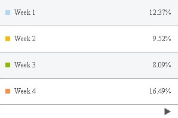
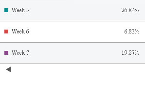

| Grid Chart | ||||||||||||||||
|
Let's create a grid chart that will visually depict the Weekly Sales of a fictitious shop. The sample data that we intend to plot can be tabularized as under: |
||||||||||||||||
|
||||||||||||||||
Let's see how to use FusionCharts ASP Class to plot this data into a Grid chart: |
||||||||||||||||
<%@LANGUAGE="VBSCRIPT"%>
<%
'Include FusionCharts ASP Class
%>
<!--#include file="../Class/FusionCharts_Gen.asp"-->
<%
dim FC
' Create FusionCharts ASP class object
set FC = new FusionCharts
' Set chart type to Grid
Call FC.setChartType("grid")
' Set chart size
Call FC.setSize("300","200")
' Set the relative path of the SWF file
Call FC.setSWFPath("../FusionCharts/")
' Set grid value Percent on
Call FC.setGridParams("showPercentValues=1")
' Set alternate row back ground color
Call FC.setGridParams("alternateRowBgColor=EAECEF")
' number item per page
Call FC.setGridParams("numberItemsPerPage=4")
' set grid font and font size
Call FC.setGridParams("baseFont=Verdana")
Call FC.setGridParams("baseFontSize=12")
' Add chart values and category names
Call FC.addChartData("40800","label=Week 1","")
Call FC.addChartData("31400","label=Week 2","")
Call FC.addChartData("26700","label=Week 3","")
Call FC.addChartData("54400","label=Week 4","")
Call FC.addChartData("88544","label=Week 5","")
Call FC.addChartData("22544","label=Week 6","")
Call FC.addChartData("65548","label=Week 7","")
%>
<html>
<head>
<title>SSGrid with ASP Class</title>
<script language='javascript' src='../FusionCharts/FusionCharts.js'></script>
</head>
<body>
<%
' Render Grid
FC.renderChart(false)
%>
</body>
</html>
|
||||||||||||||||
Let's analyze the steps involved in the above code:
|
||||||||||||||||
Here is the Grid chart displaying the first page with four data items that the FusionCharts ASP Class renders: To see the remaining data items that reside on the next page, we have to click on the arrow (button) lying at the bottom of first page. Then, we will see the next page as shown in the image below:  |